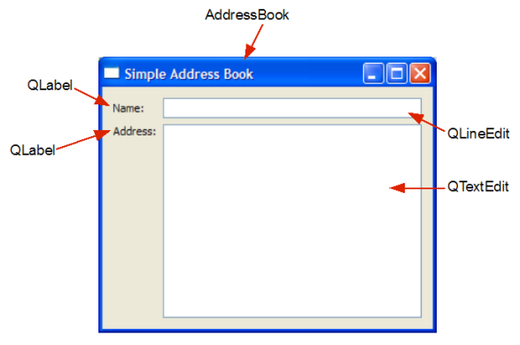

| Home |
Files:
The first part of this tutorial covers the design of the basic graphical user interface (GUI) we use for the Address Book application.
The first step to creating a GUI program is to design the user interface. In this chapter, our goal is to set up the labels and input fields needed to implement a basic address book application. The figure below is a screenshot of our expected output.

We require two QLabel objects, nameLabel and addressLabel, as well as two input fields, a QLineEdit object, nameLine, and a QTextEdit object, addressText, to enable the user to enter a contact's name and address. The widgets used and their positions are shown in the figure below.

There is a single file used to implement this address book:
When writing Qt programs, we usually subclass Qt objects to add functionality. This is one of the essential concepts behind creating custom widgets or collections of standard widgets. Subclassing to extend or change the behavior of a widget has the following advantages:
Since Qt does not provide a specific address book widget, we subclass a standard Qt widget class and add features to it. The AddressBook class we create in this tutorial can be reused in situations where a basic address book widget is needed.
We start by defining TAddressBook as a QWidget subclass and declaring a constructor.
Type TAddressBook Extends QWidget
Field nameLine:QLineEdit
Field addressText:QTextEdit
..
The type holds declarations of nameLine and addressText, the instances of QLineEdit and QTextEdit mentioned earlier. You will see, in the coming chapters, that data stored in nameLine and addressText is needed for many of the address book's functions.
We do not need to include declarations of the QLabel objects we will use because we will not need to reference them once they have been created. The way Qt tracks the ownership of objects is explained in the next section.
The constructor of TAddressBook accepts a QWidget parameter, parent. By convention, we pass this parameter to the base class's constructor. This concept of ownership, where a parent can have one or more children, is useful for grouping widgets in Qt. For example, if you delete a parent, all of its children will be deleted as well.
AddressBook::AddressBook(QWidget *parent)
: QWidget(parent)
{
QLabel *nameLabel = new QLabel(tr("Name:"));
nameLine = new QLineEdit;
QLabel *addressLabel = new QLabel(tr("Address:"));
addressText = new QTextEdit;
Within this constructor, we declare and instantiate two local QLabel objects, nameLabel and addressLabel, as well as instantiate nameLine and addressText. The tr() function returns a translated version of the string, if there is one available; otherwise, it returns the string itself. Think of this function as an <insert translation here> marker to mark Strings for translation. You will notice, in the coming chapters that we include it whenever we use a translatable string.
When programming with Qt, it is useful to know how layouts work. Qt provides three main layout classes: QHBoxLayout, QVBoxLayout and QGridLayout to handle the positioning of widgets.

We use a QGridLayout to position our labels and input fields in a structured manner. QGridLayout divides the available space into a grid and places widgets in the cells we specify with row and column numbers. The diagram above shows the layout cells and the position of our widgets, and we specify this arrangement using the following code:
QGridLayout *mainLayout = new QGridLayout;
mainLayout->addWidget(nameLabel, 0, 0);
mainLayout->addWidget(nameLine, 0, 1);
mainLayout->addWidget(addressLabel, 1, 0, Qt::AlignTop);
mainLayout->addWidget(addressText, 1, 1);
Notice that addressLabel is positioned using Qt::AlignTop as an additional argument. This is to make sure it is not vertically centered in cell (1,0). For a basic overview on Qt Layouts, refer to the Layout Classes document.
In order to install the layout object onto the widget, we have to invoke the widget's setLayout() function:
setLayout(mainLayout);
setWindowTitle(tr("Simple Address Book"));
}
Lastly, we set the widget's title to "Simple Address Book".
A separate file, main.cpp, is used for the main() function. Within this function, we instantiate a QApplication object, app. QApplication is responsible for various application-wide resources, such as the default font and cursor, and for running an event loop. Hence, there is always one QApplication object in every GUI application using Qt.
int main(int argc, char *argv[])
{
QApplication app(argc, argv);
AddressBook *addressBook = new AddressBook;
addressBook->show();
return app.exec();
}
We construct a new AddressBook widget on the heap using the new keyword and invoke its show() function to display it. However, the widget will not be shown until the application's event loop is started. We start the event loop by calling the application's exec() function; the result returned by this function is used as the return value from the main() function.
| Copyright © 2009 Nokia Corporation and/or its subsidiary(-ies) | BlitzMax Conversion © 2009 Bruce A Henderson |